Ombre psychédélique
Ombre psychédélique
Gouache sur papier, 40 x 60cm, 2021.
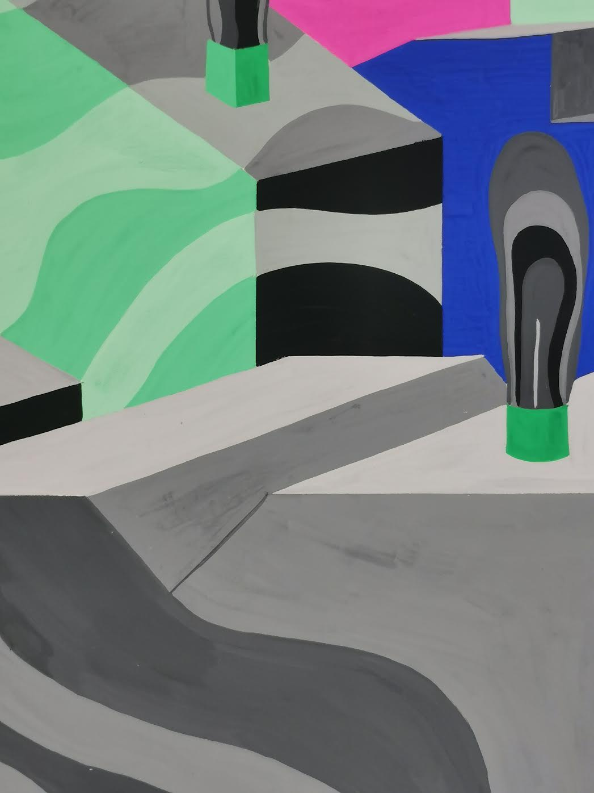
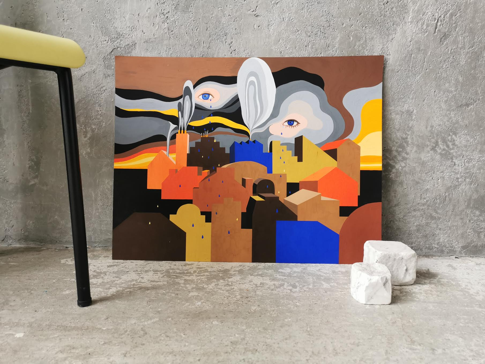
Larmes d'or sur la ville qui dort
Gouache sur papier, 50 x 65cm, 2021.
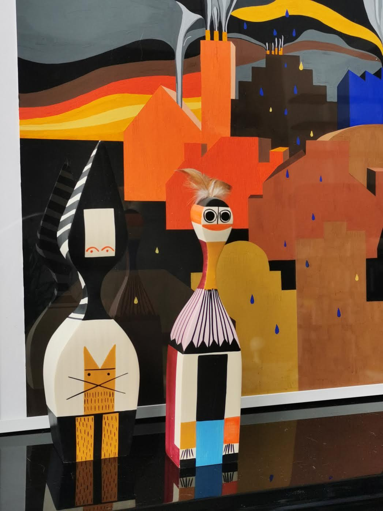
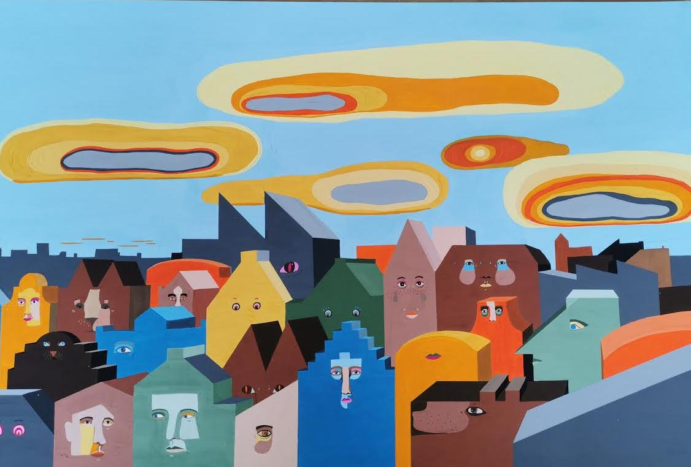
Little souls behind doors,
Gouache sur papier, 40 x 50cm, 2021.
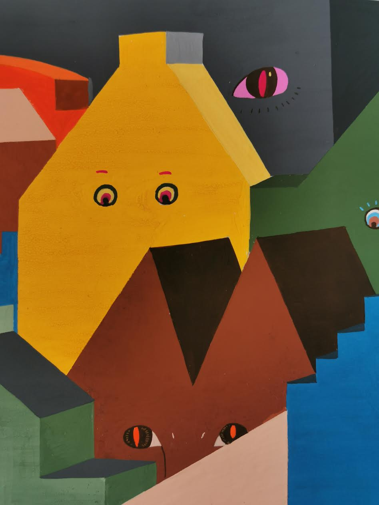
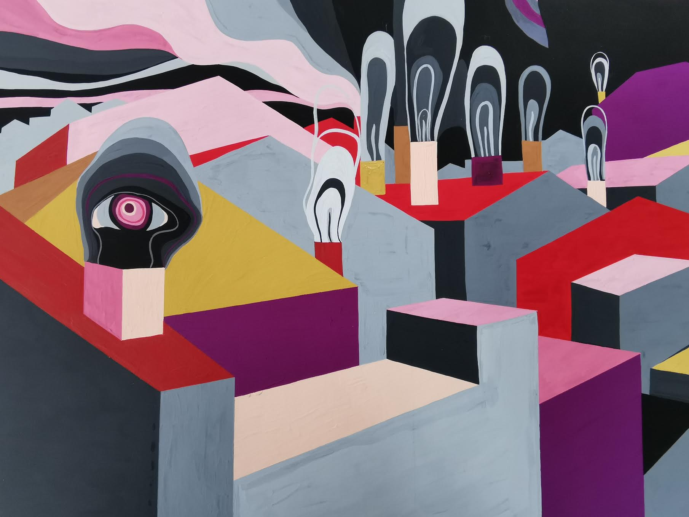
Smocking town
Gouache sur papier, 50 x 65cm, 2021.
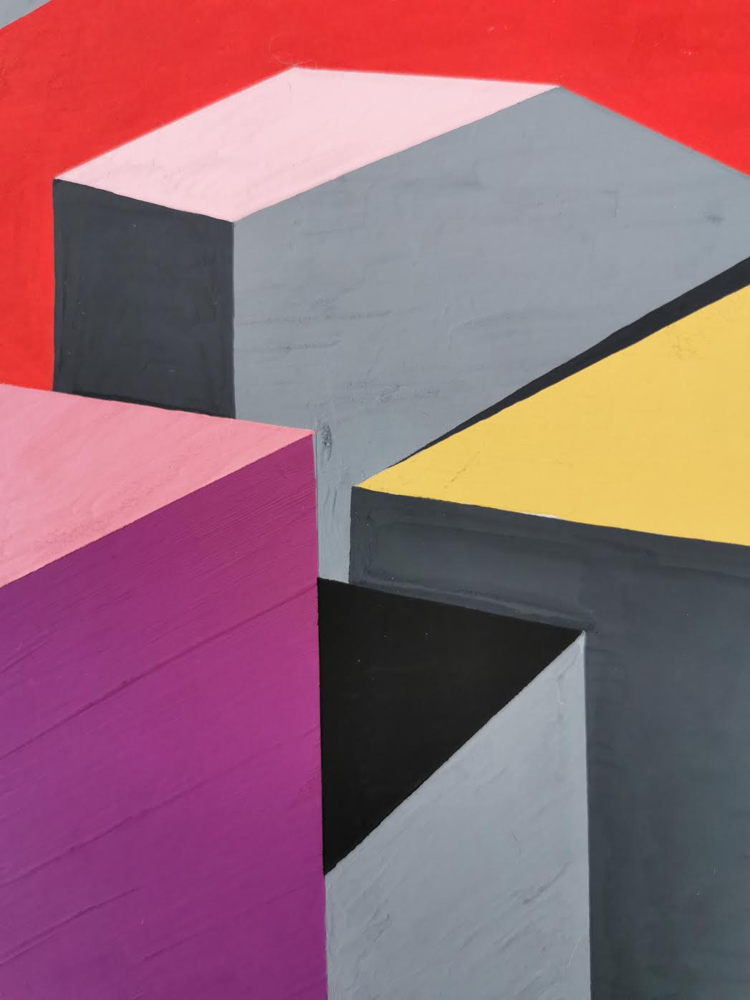
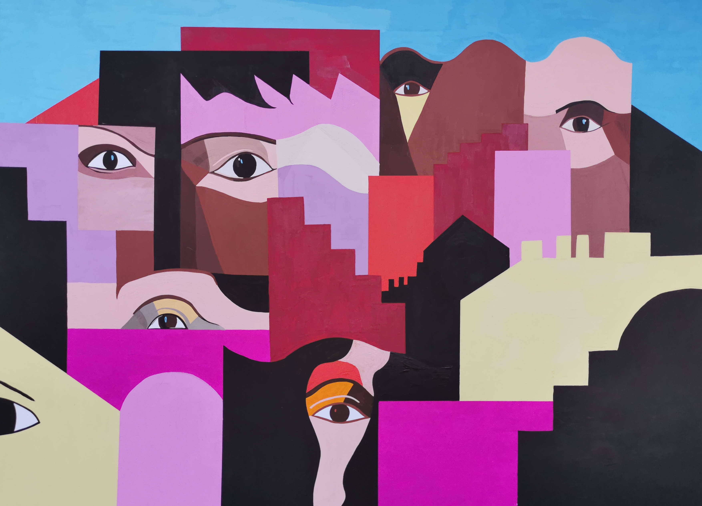
Soulsgouache sur papier, 50 x 65cm, avril 2021.
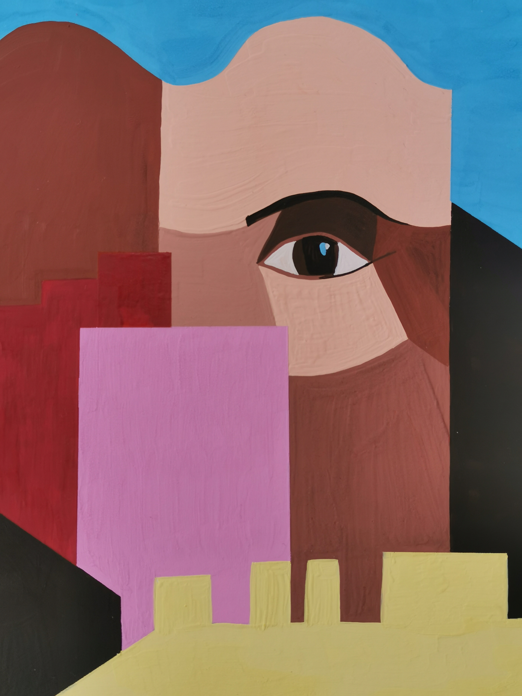
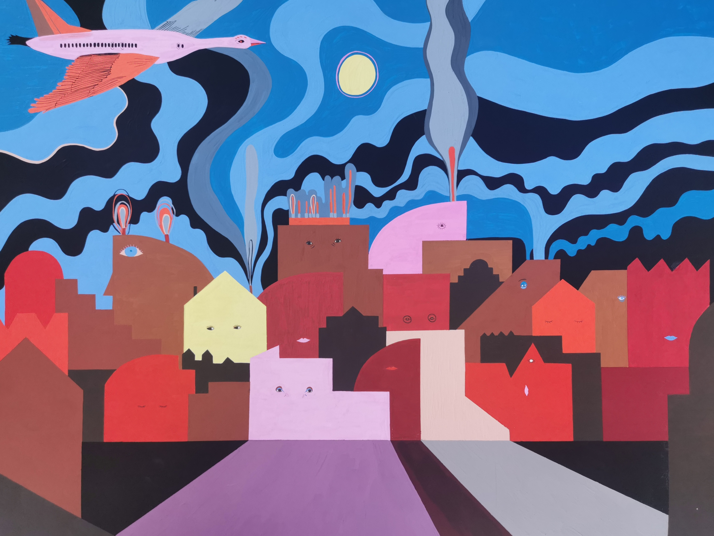
Home sweet home
Gouache sur papier, 50 x 65cm, décembre 2020.
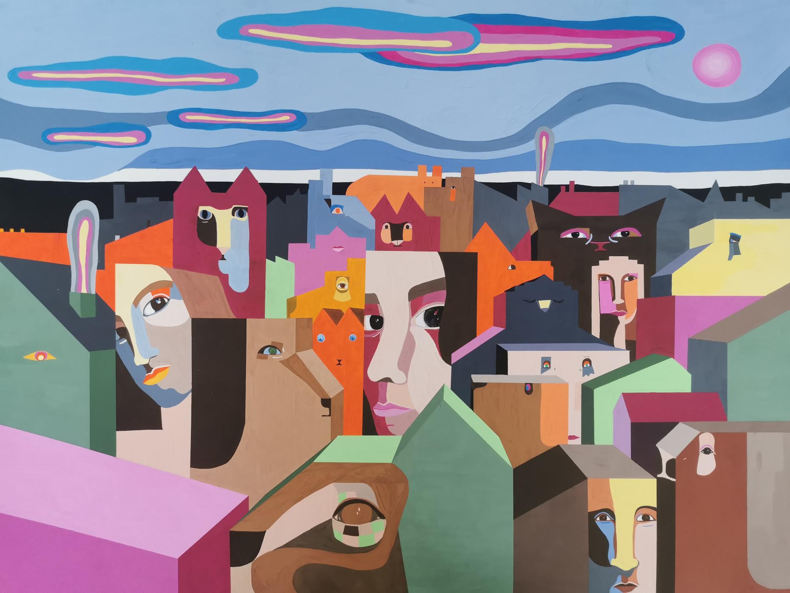
Family
Gouache sur papier, 50 x 65cm, mai 2021.
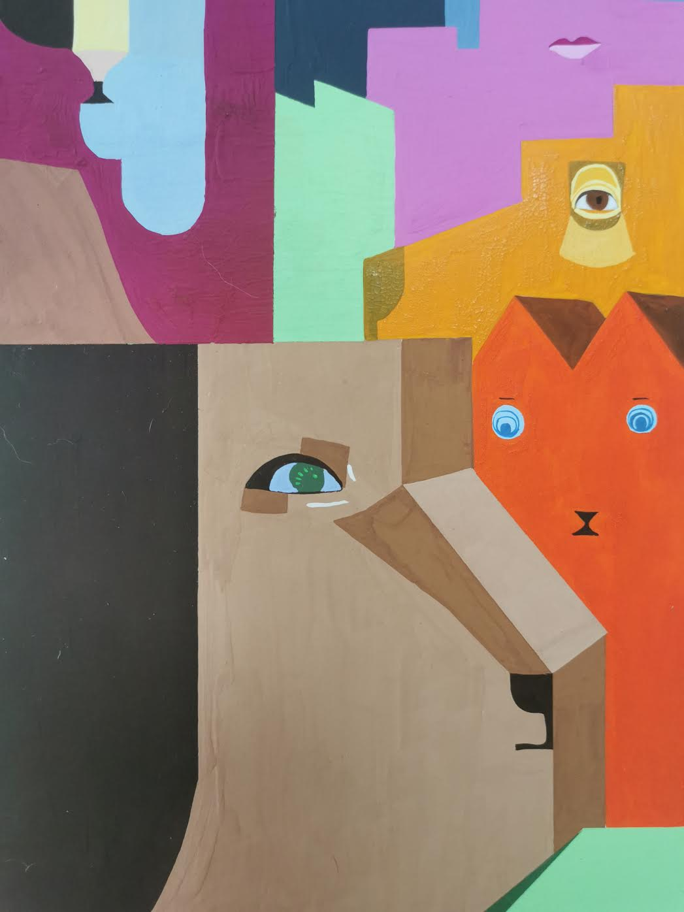